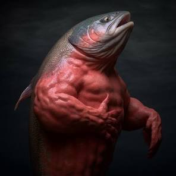

Water clarity is important.
Clear water helps monitor salmon health and growth.
Salmon typically breed in the spring and fall.
Breeding seasons are critical for salmon farming.
Salmon require healthy diet and pushups and situps regularly.
